Overview
Process supervisors are users who have special privileges to oversee and review the cases of a particular project. Often the manager or department head in an organization will be assigned as a process supervisor. Unlike process permissions which give read-only access to cases, a process supervisor can be given both read and write access to cases.
Process supervisors are able to:
- See all the cases in a process even if they are not assigned to any tasks in the case or haven’t participated in the case.
- If users have been assigned as process supervisor to DynaForms, they can edit the data in those DynaForms after they have been submitted.
- Likewise, if they have been assigned as process supervisor to input documents, they can delete and resubmit those documents.
- Upload new input documents when a case is running, so users who are running the case can see new uploaded documents.
- Process supervisors can't modify information in a completed case, so completed cases won't be listed in the review option unless they are searched by case ID. If DynaForms, output and input documents from a completed case need to be visible to the supervisor, then the correct process permission to see those documents needs be given to the supervisor.
- Unpause cases from the cases list.
Adding a Process Supervisor
Open the process where the process supervisors will be assigned. Locate the Supervisors option in the main toolbox at the right side of the screen:
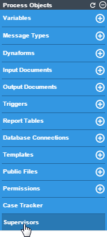
A window will open that scrolls into two parts:
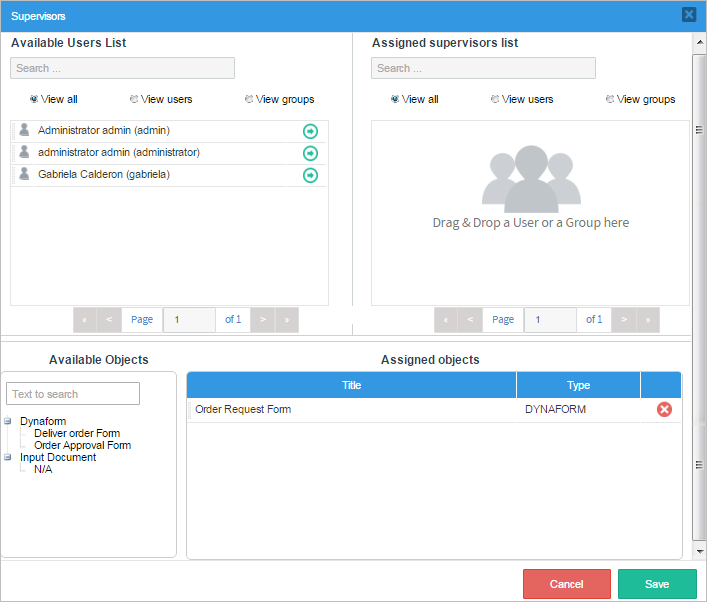
Note: The figure above shows the entire window where Supervisors are assigned. In ProcessMaker, it is necessary to scroll down to view both sections.
The first part is where the supervisors are added from the Available User List to the Assigned Supervisors List. The second part is where the steps will be added from the Available Objects to the Assigned objects.
Available Users List and Assigned Supervisors List
In the first part of the Supervisors window, one can assign a user or a group as the process supervisor(s). The user assigned as process supervisor will have the permission to see all open cases of the process as well as input and output documents of the case. The user can be dragged from the Available Users List, which has the list of all possible users and groups that have the PM_SUPERVISOR permission in their role, and dropped into the Assigned Supervisors List to assign a supervisor(s).
(check this documentation to learn how to create and work that role).
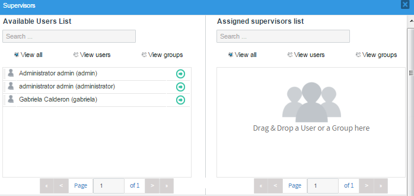
- Search... Enter the name of the user or group to search. These fields have the autocomplete property, which lists all matches as the text is introduced.
- View all Click on this button to list available users and groups to be assigned (in case of the first panel), or to list the already assigned users and groups (in the second panel).
- View users Click on this button to filter only available users in the first panel, and to filter only assigned users in the second panel.
- View groups Click on this button to filter only available groups in the first panel, and to filter only assigned groups in the second panel.
- Assign(->) For the first panel: Hover the mouse pointer over the name of the available users and groups and this button will be shown. Click on it to assign the user or group as process supervisor.
- Remove (x) For the second panel: Hover the mouse pointer over the name of the assigned users and groups and this button will be shown. Click on it to remove the user or group from the process supervisors.
- Pagination control. Each panel lists ten items before going to another page. Click on the grey arrows to navigate through these pages with this control.
There are two panels available in this section: Available users list and Assigned supervisor list. In the first panel, there is the list of all available users and groups that have the PM_SUPERVISOR permission in their role, as explained before. The supervisor must be selected from this panel.
There are two methods that can be used to assign a supervisor to a process. Click on the -> green arrow or simply drag and drop the name of the user or group to the Assigned supervisor list.
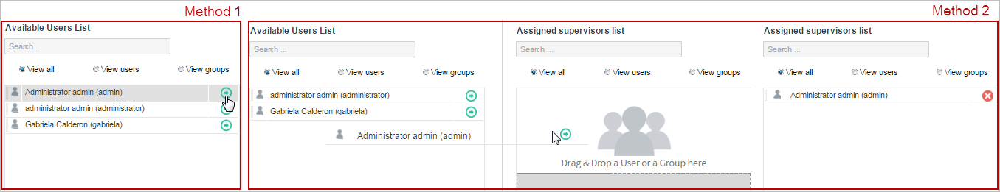
If the lists of users and groups of these panels are very large, use the filters above each panel to list only ProcessMaker users or groups more quickly. Also, use the Search... text field above to find a specific user or group.
To remove a group or user already assigned as supervisor, click on the x icon at the right side of the name of the user or group, or simply drag and drop the user/group back to the Available users list.
Available Objects and Assigned Objects
Scroll down the Supervisors window to define the DynaForms and Input Documents to which the process supervisors will have access to.
For DynaForms, process supervisors will be able to modify data stored in the DynaForm during the case, and for the input documents supervisors will be able to:
- Attach: Upload a new input document. The attached input document will be available to the user who is running the case, and who also has process permissions over the uploaded documents.
- Download: Download the input document.
- Delete: Delete the input document. If the document is deleted, it won't be available for the user running the case.
To access this option scroll down the Supervisors window. Notice that this can be made in the same modal window opened when the Supervisors option in the Main Toolbox is clicked.
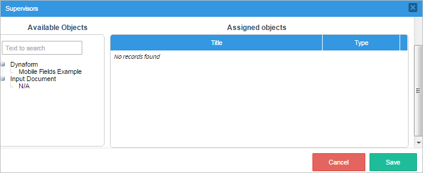
- Text to search: Search for a specific DynaForm by writing its name inside this field.
- DynaForm / Input Document: Lists all the available DynaForms and Input Documents that exist in the process to be assigned to the process supervisor. Gives supervisors the ability to work in any of them by dragging the name of the DynaForm / Input Document and dropping it in the Assigned objects panel.
- Assigned Objects: Lists the already assigned DynaForms and Input Documents. To remove them from the list, simply click on the red x button and the object will be erased from the Assigned objects panel and will be available in the Available Objects panel.

The image below shows what an assigned DynaForm looks like.
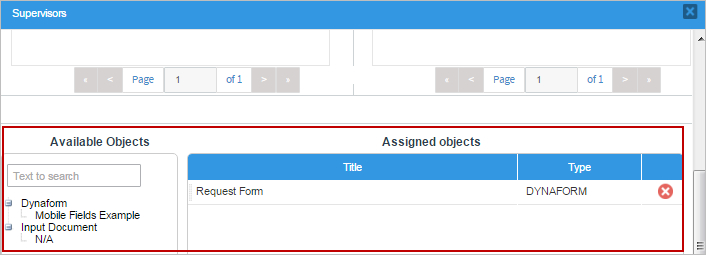
To assign one object from Available Objects to Assigned Objects, simply drag and drop the name of the object. To see how this works, drag a DynaForm and drop it into the Assigned Objects list. To remove one of the assigned objects simply click on the x icon.

Also, input documents can be added as seen in the image below

Working as a Process Supervisor
All process supervisors can take over cases by going to HOME > Process Supervisors. The Process Supervisors tab may have one or two options (depending on the permissions assigned), which are Review and Reassign. In the following sections, there will be an explanation of how to assign a supervisor to a process and see what a supervisor can do from their point of view.
Note: A bug currently prevents Process Supervisors from seeing cases that are in their first task under Home > Review. Once the case moves to the second or subsequent tasks, the cases will be visible in the list.
Defining a Process Supervisor
Only the users with a PM_SUPERVISOR permission in their role can be assigned as process supervisors. This permission is included by default in the PROCESSMAKER_ADMIN and PROCESSMAKER_MANAGER roles, but not in the PROCESSMAKER_OPERATOR role.
It is generally not a good idea to give managers and department heads the full capabilities of a PROCESSMAKER_ADMIN, because they might accidentally modify the definition of processes. Only people who have a complete understanding of the ProcessMaker software should be given those permissions. Therefore, it is recommended to give process supervisors the PROCESSMAKER_MANAGER role so users, such as managers and department heads, can see all cases, reassign cases, delete and edit users, etc.
If the process supervisor should only be able to perform specific actions, then create a new role. For example:
- PM_LOGIN
- PM_CASES
- PM_SUPERVISOR
- PM_REASSIGNCASES
- PM_LOGIN
- PM_CASES
- PM_SUPERVISOR
- PM_REASSIGNCASES
- PM_ALLCASES
- PM_DASHBOARD
| To edit case data | To see all the cases from all the other processes |
|---|---|
| Create a new role with the following permissions: |
Create a new role with the following permissions: |
After creating the new supervisor role, assign that role to the user(s) who will be the processes supervisor(s) and open the process that will be supervised.
Note: Please take note that if the PM_SUPERVISOR permission is removed from the supervisor user's role, he/she won't be able to access the Review option in the Process Supervisor menu or perform any action over the cases even if he/she remains assigned as a user supervisor. Therefore, please remember that if any permission is changed, removed or added to a role, it is necessary to update the process design to fit the new assigned or removed permissions.
Adding a New Supervisor
To add a new supervisor to a process, locate the "Supervisors" option in the Main Toolbox. When "Supervisors" is clicked a new window will open to configure the users and objects.
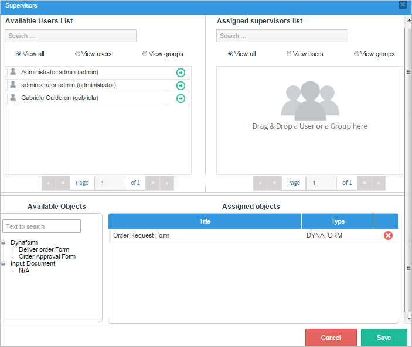
Adding Users and Groups
The users/groups assigned as process supervisors will have the permission to see all open cases in the process and any input documents in the case. A list of process supervisors will also be displayed to them.
To add a new supervisor, select a user who has the PM_SUPERVISOR permission, click on the green arrow or drag and drop a user/group from the "Available Users List" to the "Assigned Supervisors list" Any number of supervisors needed can be added to this process. The same procedure goes for adding a group. Click on the "View Groups" checkbox to see all groups and add a group as supervisor.
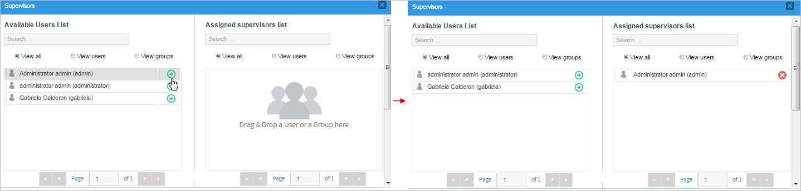

Adding Objects
The objects assigned to the process supervisor can be modified or reassigned if necessary. Notice that there are two panels which are:
- Available Objects: where all available objects, such as DynaForms and Input Documents, can be found.
- Assigned Objects: where the chosen available objects will be placed.
Drag and drop a DynaForm or an Input Document into "Assigned Objects".
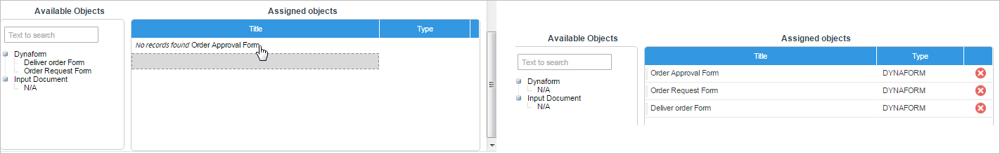
Reviewing DynaForms and Input Documents as a Supervisor User
After assigning a user as "Process Supervisor", then go to Home > Process Supervisor > Review.

Only cases of the supervised process are displayed under the Review option. In each case, the process has the Open, Summary or Case Notes options.
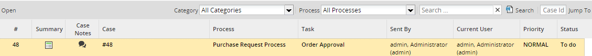
When opening a case as the "Supervisor" the following options can be viewed:
- Steps: list of all steps made in the process, including the Dynaforms and Input Documents.
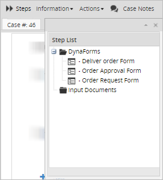
To edit the data in a Dynaform or the list of files in a Input Document, click on it to open it for editing. When done editing a Dynaform's data, click on its submit button to save it. Note that no Next Step link is available when filling in Dynaforms as the Process Supervisor, so add submit buttons to all Dynaforms whose data needs to be edited by a Process Supervisor.
Note: No triggers are fired before and after Dynaforms and Input Documents when accessed by a Process Supervisor. If needing to guarantee that a trigger is fired, it is recommended to set the trigger to fire before assignment or use JavaScript in the Dynaform to call the REST endpoint PUT /cases/{app_uid}/execute-trigger/{tri_uid}. If needing to fire the trigger after the data has been filled in the Dynaform, then add code to the form.setOnsubmit() event, which first uses PUT /cases/{app_uid}/variables to save variables from the Dynaform to the case which are needed by the trigger and then execute the trigger.
- Information: lists all information a supervisor can check, like the status of the process map, the process information, the task information, the case history, the messages history, DynaForms, uploaded and generated documents.
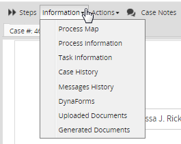
- Actions: where the supervisor can pause and cancel. Supervisor users can reassign a case only if the PM_REASSIGNCASE permission was added to their role.
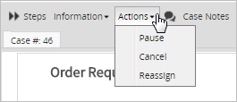
From Version: 3.0.1.8 on.
As of 3.0.1.8, supervisor users are able to reassign cases of the supervised process without the PM_REASSIGNCASE permission.
- Case Notes: displays the case notes of the case.
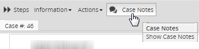
Reassigning a Case
As a process supervisor, it is possible to reassign cases of other processes with the PM_REASSIGNCASE permission. Take into consideration that Paused Cases cannot be reassigned. To reassign paused cases, go to Home > Process Supervisor > Reassign.
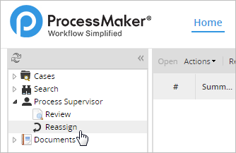
A list of all the cases available for reassignment will be displayed; click on one of the cases from the list and it will be marked for reassignment.

Click on the dropdown field to view the Current User, All Users and the name of the current user in the task.
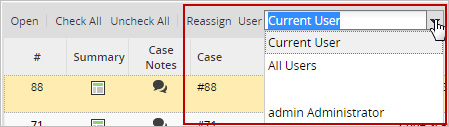
Select the first or second option in the dropdown and click on the Reassign button at the left side of the dropdown.
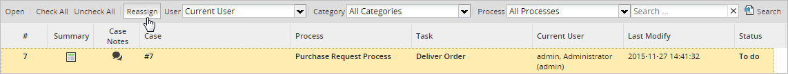
A new window will open where the case chosen can be reassigned. This window is the Reassign All Cases by Task window.
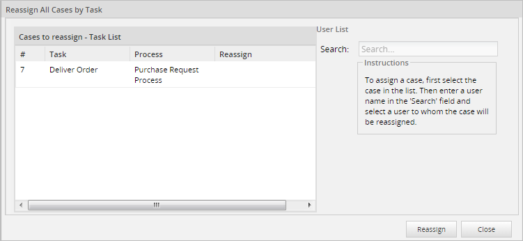
To assign a case select it from the Case to reassign - Task List and in the User List part the Search option will become available.

Choose a user who will have the authority to work on the case once this is reassigned. Remember that only users assigned to a case or ad hoc users will be listed in the search option when reassigning a case. For this example the case will be reassigned to the user Doe, Jane (jane).
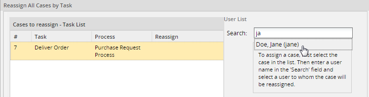
Click on the user Doe, Jane (jane) and she will appear in the case under the Reassign column as seen in the image below.

Click on the Reassign button to finalize the process of reassignment.

The Status Reassignment window will be displayed where the case number and the person who was assigned to this case will be shown. Click on the OK button to close this window. Logout as the admin and login as Doe, Jane (jane).

Once logged in as Doe, Jane (jane), the case just reassigned will appear in her inbox.
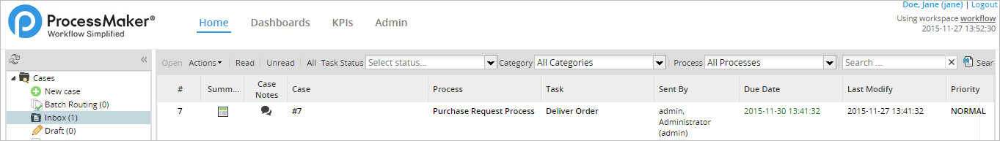
Double click on the case to open it and work on it.